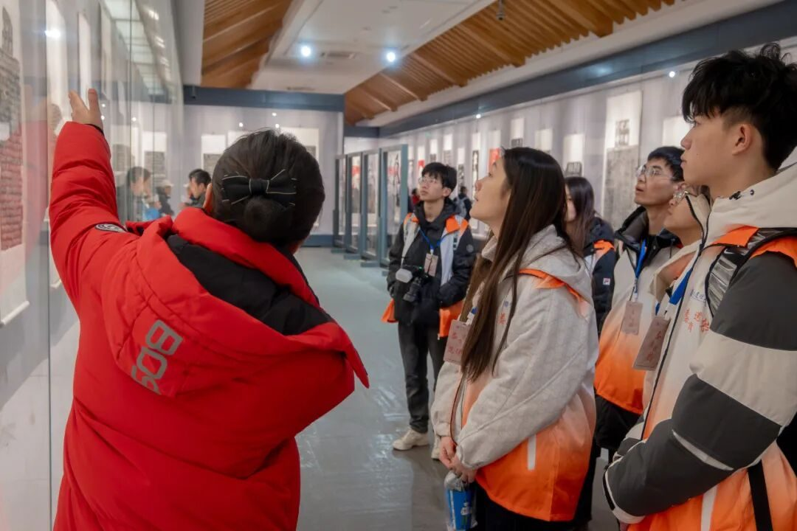
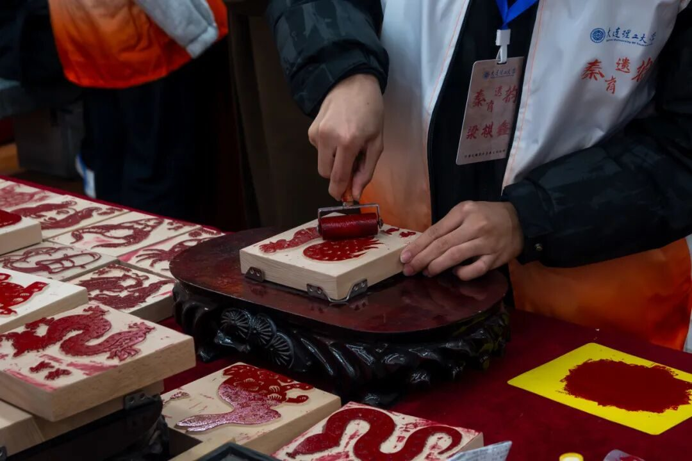
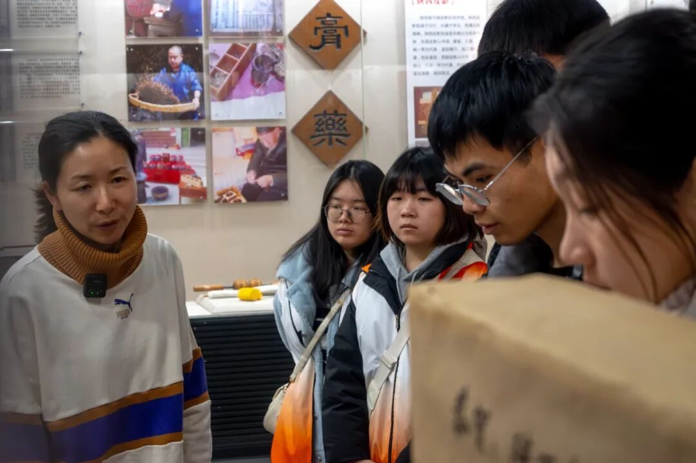
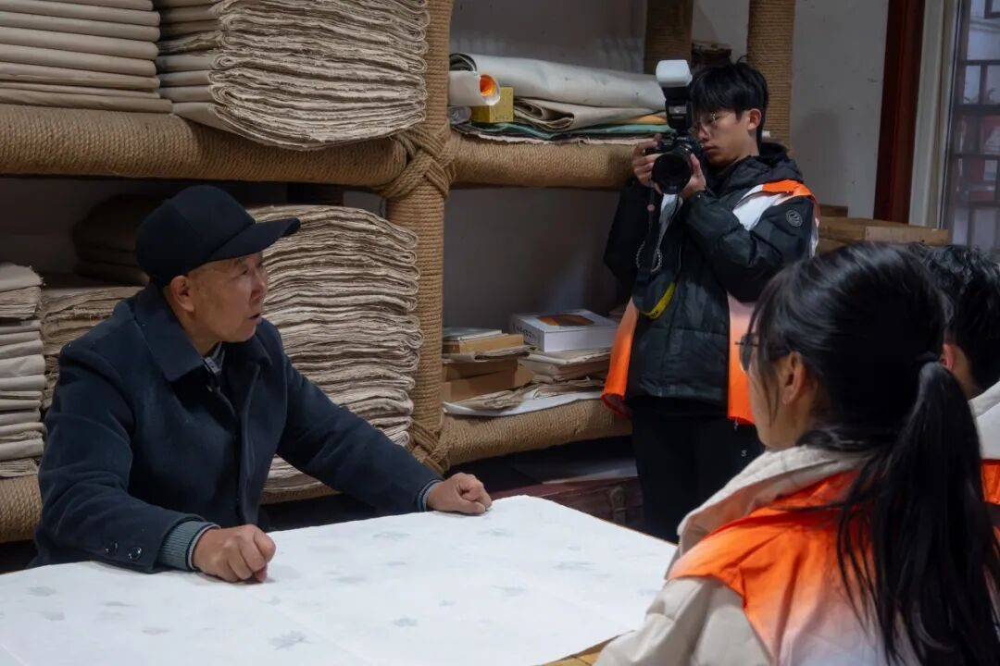
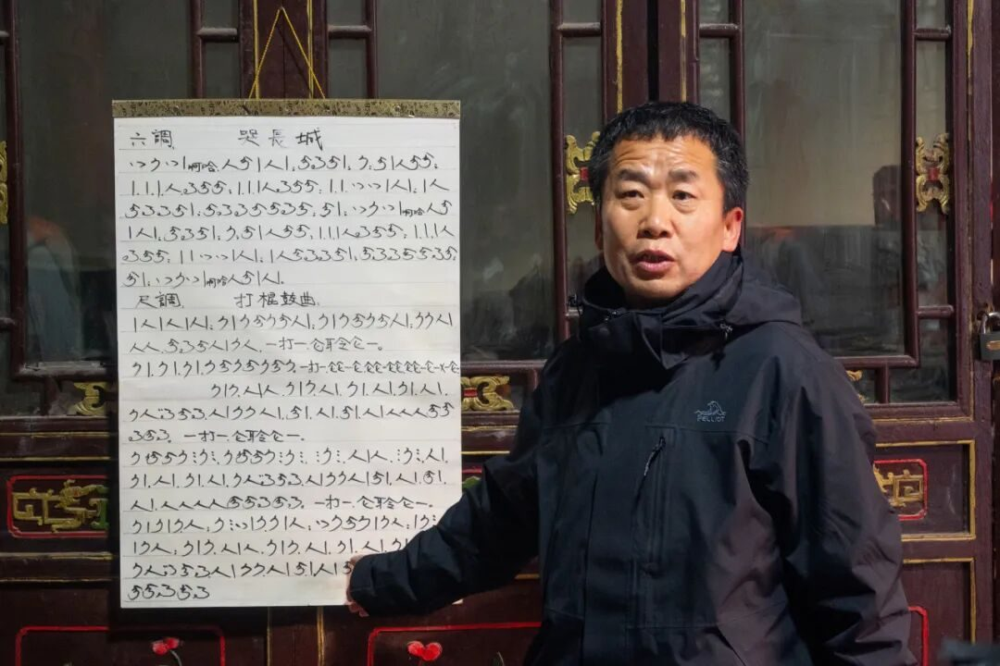
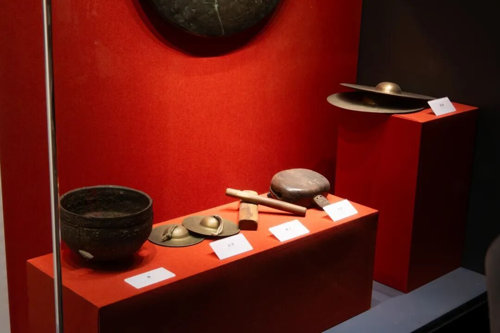
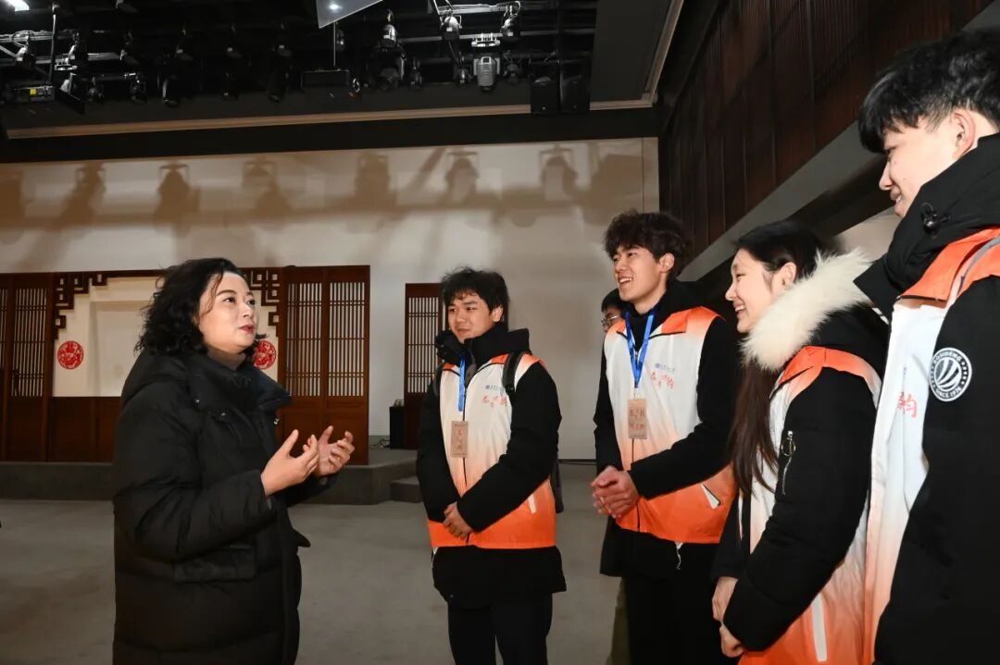

【行者无疆·秦育遗韵】行者逐光秦韵里，非遗探寻路无疆
墨香萦绕，经典之光
书卷轻展，古韵悠长
穿越千年墨香，共赴长安之约

行至西安，探寻非遗瑰宝。在为期五天的实践里，行者们深入这座历史名城，通过实地走访、深度调研，全方位了解西安的非物质文化遗产，洞悉其保护现状与传承脉络。
“工欲善其事，必先利其器”，为了行者们在西安的实践过程能有个更好的体验，行者们进行了两次会议，并进行了文化科普和事前联系等准备工作，万事俱备，只欠行者。
- Day1 -
碑林有林，大院看戏

行者无疆，古韵流淌

清晨，伴着讲解员的讲解，行者们步入碑林博物馆，其中石碑林立，文化之富含，令人佩服，而后更是亲自体验拓印技艺，感悟丰富。下午，行者们探访高家大院，他们惊于陕西民间特色的建筑风格，叹于皮影戏惟妙惟肖的精彩演绎。结束后行者们在回民街对商贩和游客进行了采访。

- Day2 -
馆藏陈列，博物炫目
珍品荟萃，文韵流芳
实践团参观了西安非物质文化遗产博物馆和陕西省非物质文化遗产陈列馆，其中多种多样的非遗技艺令人眼花缭乱，游览中，饱览古人智慧；讲解中，解制作技艺之惑。行者们亲耳聆听这些传承背后的故事，深刻感受到了非遗文化的厚重与珍贵。


- Day3 -
落位台沟，习于造纸
工艺之奇，古法新探

在冬日柔和阳光的照射下，行者们走在前往台沟村造纸厂的乡间小路上，马松胜老师介绍了造纸的全流程并带领行者们自行体验。行者们纷纷自告奋勇，立志亲手做出褚皮纸。之后与马松胜老师进行座谈交流，了解到了当前造纸难以获利和传承，只望纸风起，有人接过匠人薪火。之后行者们来到生命之树进行了问卷分发，感受到西安人对于非遗的重视。

- Day4 -
何家营社，鼓乐齐鸣
锣鼓喧天，音韵铿锵
行者们行至何家营，访问鼓乐社，颇有“扫地僧”风范的郑社长亲自接见了他们，并邀请行者们痛一群特殊的孩子观看鼓乐表演。后在对郑社长的采访中，行者们也得以了解非遗鼓乐经久不衰的实质。下午大雁塔下，行者们集结一起，以街访形式共同探寻非遗加教育之道。


- Day5 -
移风易俗，秦腔高歌
慷慨激昂，遒劲雄厚

秦腔非吼，易俗非俗。来到易俗社，工作人员热情地接待了行者们，带领他们参观了易俗社博物馆，行者们也领会到百年易俗精神。随后在对易俗社当红演员和青年才俊的采访中，行者们感受到他们对于秦腔的热爱，让行者们对秦腔的发展和传承充满信心。·


观看秦腔表演后，伴随着台上似吼，似婉转，似鼓励的秦腔结束语，行者们褪去队服，消散在了易俗街头，本次实践完美落幕。
行者无疆：信念与梦想的永恒追求

行程虽至此，但探索无疆。身为 “行者无疆” 实践团的成员，我们将始终秉持团队信念，步履不停，奔赴山河，持续探寻各地绚丽多彩的非遗文化，让古老技艺在新时代绽放新光芒 。
做文化的行者，我们一直在路上！

来源 | 行者无疆实践团
图片 | 樊星烁 梁棋鑫
编辑 | 李麟凤
审核 | 范伊诺 李凌志
责编 | 邹靓靓